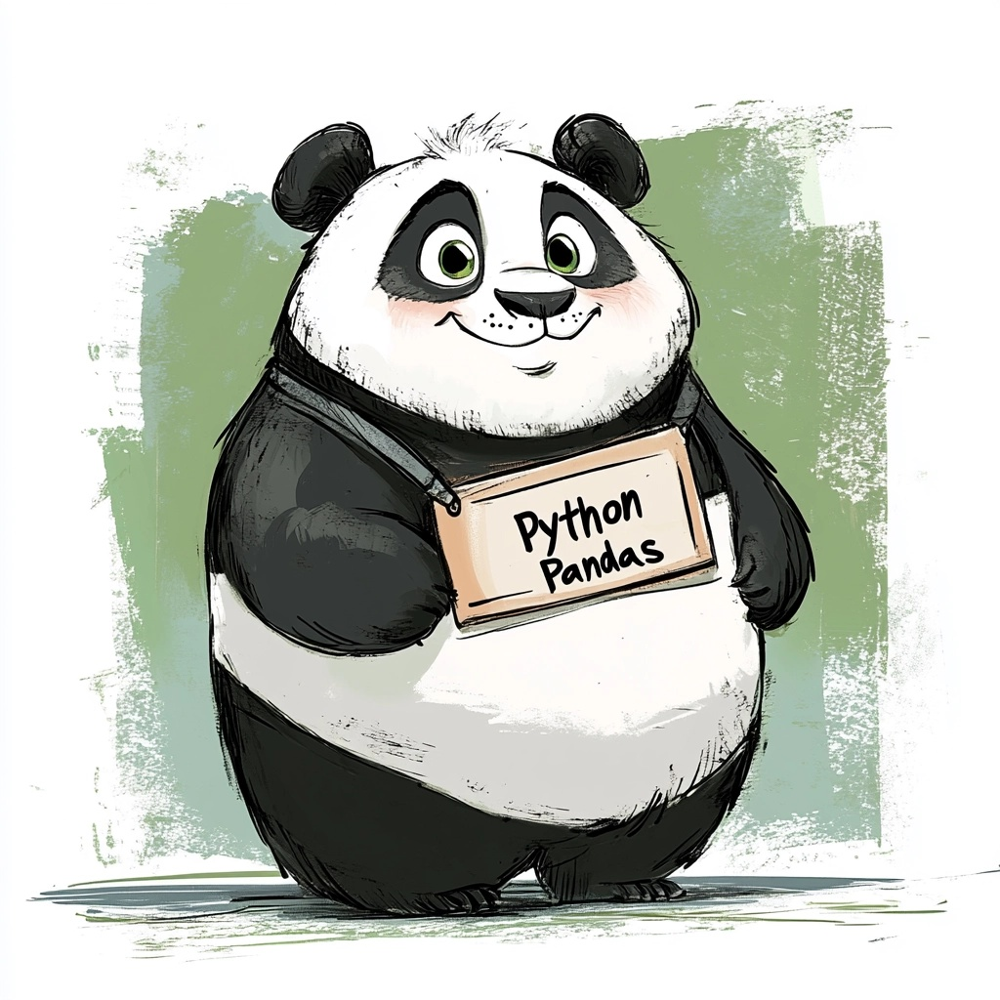

Code
import pandas as pd🐼 Reading Data into pandas

A panda, reading. MidJourney 5
Yesterday you ran pd.read_csv() and a DataFrame appeared. Today you slow that line down and learn what it actually does, what it gives you back, and how to steer it. Everything this week starts with getting data into Python correctly, so this is the most load-bearing hour of the course.
By the end of this session you will be able to:
Create a new notebook:
Ctrl + Shift + P (Cmd + Shift + P on macOS) and run Create: New Jupyter Notebook.Save your notebook (Ctrl + S, or Cmd + S on macOS) as: Session_2A_Reading_Data.ipynb
Add a title cell (Markdown), updating the date to today:
# Day 2: Session 2A - Reading Data into pandas
[Session Webpage](https://eds-217-essential-python.github.io/course-materials/interactive-sessions/2a_reading_data.html)
Date: 09/01/2026Save your work frequently with Ctrl+S (Cmd+S on macOS).
Every notebook that touches data starts the same way:
import pandas makes the library available. as pd gives it a short nickname so you can write pd.read_csv() instead of pandas.read_csv(). Essentially every pandas user on earth writes pd, so we will too.
We’ll work with air quality measurements from an OpenAQ monitoring station in Goleta, just up the road from Bren.
Notice we put the address in a variable first. This is a habit worth forming: the URL is long, you’ll use it more than once, and naming it keeps your read_csv line readable.
pd.read_csv()Here is the whole sentence:
That’s it. pd.read_csv() takes a location, goes and gets the file, parses the commas, and hands you back a DataFrame. Let’s look at the first few rows:
| location_id | location_name | parameter | value | unit | datetimeUtc | datetimeLocal | timezone | latitude | longitude | country_iso | isMobile | isMonitor | owner_name | provider | |
|---|---|---|---|---|---|---|---|---|---|---|---|---|---|---|---|
| 0 | 1186 | Goleta | o3 | 0.025 | ppm | 2024-07-12T01:00:00+00:00 | 2024-07-11T18:00:00-07:00 | America/Los_Angeles | 34.445301 | -119.827797 | NaN | NaN | NaN | Unknown Governmental Organization | AirNow |
| 1 | 1186 | Goleta | o3 | 0.028 | ppm | 2024-07-12T02:00:00+00:00 | 2024-07-11T19:00:00-07:00 | America/Los_Angeles | 34.445301 | -119.827797 | NaN | NaN | NaN | Unknown Governmental Organization | AirNow |
| 2 | 1186 | Goleta | o3 | 0.029 | ppm | 2024-07-12T03:00:00+00:00 | 2024-07-11T20:00:00-07:00 | America/Los_Angeles | 34.445301 | -119.827797 | NaN | NaN | NaN | Unknown Governmental Organization | AirNow |
| 3 | 1186 | Goleta | o3 | 0.027 | ppm | 2024-07-12T04:00:00+00:00 | 2024-07-11T21:00:00-07:00 | America/Los_Angeles | 34.445301 | -119.827797 | NaN | NaN | NaN | Unknown Governmental Organization | AirNow |
| 4 | 1186 | Goleta | o3 | 0.026 | ppm | 2024-07-12T05:00:00+00:00 | 2024-07-11T22:00:00-07:00 | America/Los_Angeles | 34.445301 | -119.827797 | NaN | NaN | NaN | Unknown Governmental Organization | AirNow |
🐍 read_csv is happy with either a web address or a path to a file on disk. These two are the same idea:
df = pd.read_csv('https://example.org/data.csv') # from the web
df = pd.read_csv('data/measurements.csv') # from a folder next to your notebookThis week we mostly read from the web, because then everyone in the room has exactly the same file.
The Santa Barbara station’s data is at the same address, but with openaq_santa_barbara_measurments.csv on the end. Read it into a variable called santa_barbara and display its first few rows.
A DataFrame is a table: rows and named columns, like a well-behaved spreadsheet.
Pull a single column out and you get a Series, which is one column of values with the row labels still attached:
0 0.025
1 0.028
2 0.029
3 0.027
4 0.026
...
1957 10.000
1958 8.000
1959 8.000
1960 9.000
1961 5.000
Name: value, Length: 1962, dtype: float64Check the types to see the difference plainly:
<class 'pandas.core.frame.DataFrame'>
<class 'pandas.core.series.Series'>This distinction matters more than it looks. Many pandas methods return a Series, and knowing you’re holding one column rather than a table tells you what you can do next.
Pull out the parameter column. Confirm with type() that you have a Series, then display its first five values.
You often want to know what’s in a table before you do anything else. The .columns attribute tells you:
Index(['location_id', 'location_name', 'parameter', 'value', 'unit',
'datetimeUtc', 'datetimeLocal', 'timezone', 'latitude', 'longitude',
'country_iso', 'isMobile', 'isMonitor', 'owner_name', 'provider'],
dtype='object')That’s a pandas object. To get a plain Python list, which is easier to read and to work with, use .tolist():
['location_id',
'location_name',
'parameter',
'value',
'unit',
'datetimeUtc',
'datetimeLocal',
'timezone',
'latitude',
'longitude',
'country_iso',
'isMobile',
'isMonitor',
'owner_name',
'provider']A list is Python’s basic container for an ordered collection of things. You write one with square brackets and commas:
You get items out by position, counting from zero:
And len() tells you how many items there are:
🐍 Counting from zero trips up everyone at first. The first item is at position 0, the second at 1, and the last one is at len(x) - 1. You can also count backwards: [-1] is the last item.
Here’s where the list pays off. Hand read_csv’s result a list of column names and you get a smaller DataFrame with just those columns:
| location_name | parameter | value | unit | |
|---|---|---|---|---|
| 0 | Goleta | o3 | 0.025 | ppm |
| 1 | Goleta | o3 | 0.028 | ppm |
| 2 | Goleta | o3 | 0.029 | ppm |
| 3 | Goleta | o3 | 0.027 | ppm |
| 4 | Goleta | o3 | 0.026 | ppm |
You’ll see this written both ways. The inner brackets are the list, the outer brackets are the selection:
| location_name | parameter | value | unit | |
|---|---|---|---|---|
| 0 | Goleta | o3 | 0.025 | ppm |
| 1 | Goleta | o3 | 0.028 | ppm |
| 2 | Goleta | o3 | 0.029 | ppm |
| 3 | Goleta | o3 | 0.027 | ppm |
| 4 | Goleta | o3 | 0.026 | ppm |
Build a list called time_columns containing 'datetimeUtc' and 'datetimeLocal', then use it to display just those two columns from goleta.
index_col=Every DataFrame has an index: the labels down the left-hand side. By default pandas numbers the rows 0, 1, 2, .... You saw those numbers in head().
Sometimes a column in the file is a better label than a row number. index_col= tells read_csv to use one:
| location_id | location_name | parameter | value | unit | datetimeUtc | timezone | latitude | longitude | country_iso | isMobile | isMonitor | owner_name | provider | |
|---|---|---|---|---|---|---|---|---|---|---|---|---|---|---|
| datetimeLocal | ||||||||||||||
| 2024-07-11T18:00:00-07:00 | 1186 | Goleta | o3 | 0.025 | ppm | 2024-07-12T01:00:00+00:00 | America/Los_Angeles | 34.445301 | -119.827797 | NaN | NaN | NaN | Unknown Governmental Organization | AirNow |
| 2024-07-11T19:00:00-07:00 | 1186 | Goleta | o3 | 0.028 | ppm | 2024-07-12T02:00:00+00:00 | America/Los_Angeles | 34.445301 | -119.827797 | NaN | NaN | NaN | Unknown Governmental Organization | AirNow |
| 2024-07-11T20:00:00-07:00 | 1186 | Goleta | o3 | 0.029 | ppm | 2024-07-12T03:00:00+00:00 | America/Los_Angeles | 34.445301 | -119.827797 | NaN | NaN | NaN | Unknown Governmental Organization | AirNow |
| 2024-07-11T21:00:00-07:00 | 1186 | Goleta | o3 | 0.027 | ppm | 2024-07-12T04:00:00+00:00 | America/Los_Angeles | 34.445301 | -119.827797 | NaN | NaN | NaN | Unknown Governmental Organization | AirNow |
| 2024-07-11T22:00:00-07:00 | 1186 | Goleta | o3 | 0.026 | ppm | 2024-07-12T05:00:00+00:00 | America/Los_Angeles | 34.445301 | -119.827797 | NaN | NaN | NaN | Unknown Governmental Organization | AirNow |
The local timestamp is now the row label, and it’s no longer one of the columns:
['location_id',
'location_name',
'parameter',
'value',
'unit',
'datetimeUtc',
'timezone',
'latitude',
'longitude',
'country_iso',
'isMobile',
'isMonitor',
'owner_name',
'provider']🐍 index_col= is our first keyword argument: an argument you pass by name rather than by position. read_csv has dozens of them, and you’ll meet a few more this week. The pattern is always name=value, after the required arguments.
An index is most useful when its values are meaningful and unique. location_name would be a poor choice here, since every row has the same station name. A timestamp is a good choice, because it identifies the row.
Read the Goleta file again, this time using datetimeUtc as the index, into a variable called goleta_utc. How many columns does it have compared to the original goleta?
You now have the first sentence of every workflow you’ll write:
import pandas as pd once, at the top of every notebook.pd.read_csv(location) reads a CSV from a URL or a file path and returns a DataFrame.df['col'] gives a Series (one column). df[['a', 'b']] gives a DataFrame.df.columns.tolist() gives you the column names as a plain Python list.[], indexed from 0, and measured with len().index_col='name' chooses which column becomes the row labels.